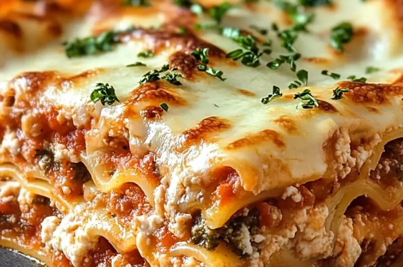

Meat Lasagna

A Classic Meat Lasagna for the Whole Family
Lasagna is the ultimate Italian comfort food, layering tender pasta sheets with a rich, flavorful meat sauce, creamy ricotta, and plenty of melted cheese. Each bite is a perfect balance of savory goodness,
making it a favorite for family dinners and special gatherings. Whether you’re cooking for a crowd or meal-prepping for the week, this baked lasagna never fails to satisfy.
What makes this dish even better is its versatility. You can swap out the meat for roasted vegetables, use different cheeses, or add a bit of spice with red pepper flakes.
Served with a fresh salad and warm garlic bread, this lasagna is a delicious and satisfying meal that brings everyone to the table.
Full Recipe
12 Lasagna Noodles
2 tablespoons olive oil
1 pound ground beef
2 cloves of garlic
3 cups marinara sauce
15 ounces ricotta cheese
1 egg
2 cups shredded mozzarella cheese
1 cup grated Parmesan cheese
1 teaspoon dired italian seasoning
Salt and pepper to taste
Fresh basil leaves
Directions
Follow These Step
Preheat your oven to 375°F (190°C).
Cook the lasagna noodles according to package instructions until al dente. Drain and set aside.
In a large skillet, heat the olive oil over medium heat. Add the chopped onion and minced garlic, sautéing until softened (2-3 minutes).
Add the ground beef or sausage to the skillet and cook until browned, breaking it up as it cooks. Drain any excess fat.
Stir in 2 cups of marinara sauce and let simmer for about 5 minutes. Season with salt, pepper, and Italian seasoning.
In a mixing bowl, combine ricotta cheese, egg, and half of the Parmesan cheese. Mix until smooth.
Spread a thin layer of the remaining marinara sauce on the bottom of a 9×13 inch baking dish.
Layer 3 lasagna noodles over the sauce. Spread half of the ricotta mixture over the noodles, add a layer of meat sauce, and sprinkle 1/3 of the mozzarella cheese on top.
Repeat: add 3 more noodles, the remaining ricotta mixture, more meat sauce, and another 1/3 of mozzarella cheese.
Finish with the last 3 noodles, spreading the remaining marinara sauce on top and finishing with the rest of the mozzarella and Parmesan cheese.
Cover the dish with aluminum foil and bake for 25 minutes. Then, remove the foil and bake for another 15-20 minutes until the cheese is golden and bubbly.
Let the lasagna rest for 10-15 minutes before slicing. Garnish with fresh basil if desired.
Home